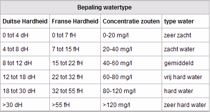
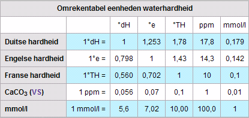

Definition list
-
Wat is Hard water?
Unordered list
In water komen de mineralen calcium en magnesium voor. Wanneer deze zich gaan binden
ontstaat er kalk. Van nature
zit er in water kalk. Water met een te hoog gehalte aan kalk noemen we hard water. De mate
van hardheid van water
neemt toe, naarmate er meer calcium en magnesium in het water oplost. Hoe meer
bindingen er worden gevormd,
des te meer neemt de mate van de hardheid toe. De mineralen magnesium en calcium zijn allebei positief geladen ionen.
Dit heeft gevolgen voor de oplosbaarheid van andere positief geladen ionen. Deze lossen minder makkelijk op in hard water
dan in water dat geen calcium en magnesium bevat. Daarom lost zeep niet goed op in hard water. Bij het oplossen van zeep
in zacht water ontstaat er veel meer schuim. Dit wordt aangegeven met dH, °dH of D°. In België word de waterhardheid uitgedrukt
in Franse hardheid. Dit wordt aangegeven met fH of °fH. In de VS wordt de waterhardheid aangegeven in hardness, en in Groot
Brittanië in clark. Van 15 tot 30 °F spreekt men over middelhard water. Boven 30 °F is het water hard tot zeer hard. De waterhardheid
geeft de hoeveelheid kalk aan. Eén Duitse graad stemt overeen met 17,8 g kalksteen per m³. 1 Franse graad is gelijk aan
0,56 Duitse graden en stemt overeen met 10 mg calciumcarbonaat en 4 mg magnesiumoxide per liter.
Hieronder ziet u een schema waarin de Duitse en de Franse Hardheden met elkaar worden
vergeleken.
Ook staan hier de concentraties zouten in en het type water.
Definition list
-
- 
De volgende tabel is een omrekentabel van de eenheden die in de tabel hierboven zijn
gebruikt.
Definition list
-
- 
Unordered list
In water zitten bijna altijd opgeloste stoffen. Deze stoffen komen in het water terecht doordat water tijdens zijn
kringloop op onze aarde in contact komt met verschillende milieus die het zuivere water vervuilen.
Bij een hoge temperatuur verdampt water en vormt het wolken. Het keert terug op aarde in de vorm van neerslag. Hierbij
neemt het verschillende onzuiverheden mee uit de atmosfeer.Als het water de aarde bereikt, dringt het de grond binnen.
Vervolgens passeert het water verschillende grondlagen, waarbij er organische componenten, kalksteen en mineralen aan toe
gevoegd worden. Op deze manier ontstaat hard water. Een teveel aan deze stoffen zorgt voor een te grote hardheid, een te
hoge zuurgraad en een slechte geur of smaak.
Unordered list
Tijdelijke en blijvende hardheid
Calcium komt in hard water voor als calciumwaterstofcarbonaat Ca(HCO3)2 en calciumsulfaat (CaSO4). Als je hard water
verwarmd, ontleed het calciumwaterstofcarbonaat en slaat neer als calciumcarbonaat (CaCO3). Het is verdwenen uit
het water. Caciumsulfaat daarentegen verdwijnt niet uit het water door verwarmen, omdat het niet ontleed kan worden.
De hardheid die veroorzaakt wordt door calciumwaterstofcarbonaat is daarom tijdelijk. De hardheid die veroorzaakt
wordt door calciumsulfaat is blijvend.